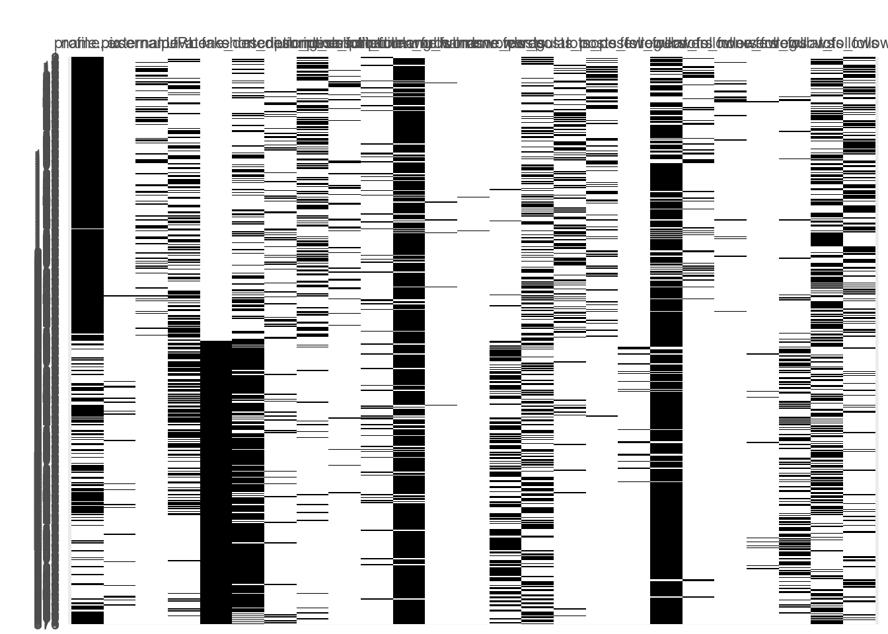
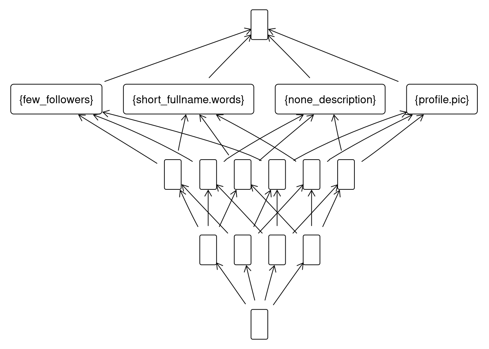

library(fcaR)
library(dplyr)
library(hasseDiagram)Análisis Formal de Contextos
El siguiente método que vamos a utilizar es FCA, que nos ayuda a describir relaciones entre grupos de objetos y atributos. Para este conjunto de datos ya hemos visto algunas relaciones interesantes al trabajar con reglas de asociación, por lo que esperamos extraer un conocimiento similar con esta técnica.
Preprocesamiento
Vamos a aprovechar que nuestro conjunto de datos tiene bastantes atributos binarios para construir el concepto formal. Por tanto, vamos a transformar aquellas columnas que nos lo permitan a binarias si no lo son y vamos a eliminar el resto.
insta_fca <- read.csv("train.csv")
# Elimino columnas
insta_fca$nums.length.fullname <- NULL
insta_fca$nums.length.username <- NULL
# Discretizo
insta_fca$description.length <- cut(insta_fca$description.length,
breaks = c(-1, 0, 22, 100, Inf),
labels = c("None", "Short", "Medium", "Long"))
insta_fca$fullname.words <- cut(insta_fca$fullname.words,
breaks = c(-1, 0, 4, 8, Inf),
labels = c("None", "Short", "Medium", "Long"))
insta_fca$X.posts <- cut(insta_fca$X.posts,
breaks = c(-1, 0, 50, 200, Inf),
labels = c("None", "Few", "Regular", "Lots"))
insta_fca$X.followers <- cut(insta_fca$X.followers,
breaks = c(-1, 0, 2000, 80000, Inf),
labels = c("None", "Few", "Regular", "Lots"))
insta_fca$X.follows <- cut(insta_fca$X.follows,
breaks = c(-1, 0, 50, 500, Inf),
labels = c("None", "Few", "Regular", "Lots"))# Convierto a binarias
insta_fca <- insta_fca %>%
mutate(
none_description = if_else(description.length == "None", 1, 0),
short_description = if_else(description.length == "Short", 1, 0),
medium_description = if_else(description.length == "Medium", 1, 0),
long_description = if_else(description.length == "Long", 1, 0))
insta_fca <- insta_fca %>%
mutate(
none_fullname.words = if_else(fullname.words == "None", 1, 0),
short_fullname.words = if_else(fullname.words == "Short", 1, 0),
medium_fullname.words = if_else(fullname.words == "Medium", 1, 0),
long_fullname.words = if_else(fullname.words == "Long", 1, 0))
insta_fca <- insta_fca %>%
mutate(
none_posts = if_else(X.posts == "None", 1, 0),
few_posts = if_else(X.posts == "Few", 1, 0),
regular_posts = if_else(X.posts == "Regular", 1, 0),
lots_posts = if_else(X.posts == "Lots", 1, 0))
insta_fca <- insta_fca %>%
mutate(
none_followers = if_else(X.followers == "None", 1, 0),
few_followers = if_else(X.followers == "Few", 1, 0),
regular_followers = if_else(X.followers == "Regular", 1, 0),
lots_followers = if_else(X.followers == "Lots", 1, 0))
insta_fca <- insta_fca %>%
mutate(
none_follows = if_else(X.follows == "None", 1, 0),
few_follows = if_else(X.follows == "Few", 1, 0),
regular_follows = if_else(X.follows == "Regular", 1, 0),
lots_follows = if_else(X.follows == "Lots", 1, 0))
# Elimino las columnas que ya no necesito
insta_fca$description.length <- NULL
insta_fca$fullname.words <- NULL
insta_fca$X.posts <- NULL
insta_fca$X.followers <- NULL
insta_fca$X.follows <- NULLContexto Formal
# Creo el contexto formal
fc <- FormalContext$new(insta_fca)# Lo visualizo
fc$plot()
# Conceptos
fc$find_concepts()
fc$concepts[1:3]A set of 3 concepts:
1: ({1, 2, 3, 4, 5, 6, 7, 8, 9, 10, 11, 12, 13, 14, 15, 16, 17, 18, 19, 20, 21, 22, 23, 24, 25, 26, 27, 28, 29, 30, 31, 32, 33, 34, 35, 36, 37, 38, 39, 40, 41, 42, 43, 44, 45, 46, 47, 48, 49, 50, 51, 52, 53, 54, 55, 56, 57, 58, 59, 60, 61, 62, 63, 64, 65, 66, 67, 68, 69, 70, 71, 72, 73, 74, 75, 76, 77, 78, 79, 80, 81, 82, 83, 84, 85, 86, 87, 88, 89, 90, 91, 92, 93, 94, 95, 96, 97, 98, 99, 100, 101, 102, 103, 104, 105, 106, 107, 108, 109, 110, 111, 112, 113, 114, 115, 116, 117, 118, 119, 120, 121, 122, 123, 124, 125, 126, 127, 128, 129, 130, 131, 132, 133, 134, 135, 136, 137, 138, 139, 140, 141, 142, 143, 144, 145, 146, 147, 148, 149, 150, 151, 152, 153, 154, 155, 156, 157, 158, 159, 160, 161, 162, 163, 164, 165, 166, 167, 168, 169, 170, 171, 172, 173, 174, 175, 176, 177, 178, 179, 180, 181, 182, 183, 184, 185, 186, 187, 188, 189, 190, 191, 192, 193, 194, 195, 196, 197, 198, 199, 200, 201, 202, 203, 204, 205, 206, 207, 208, 209, 210, 211, 212, 213, 214, 215, 216, 217, 218, 219, 220, 221, 222, 223, 224, 225, 226, 227, 228, 229, 230, 231, 232, 233, 234, 235, 236, 237, 238, 239, 240, 241, 242, 243, 244, 245, 246, 247, 248, 249, 250, 251, 252, 253, 254, 255, 256, 257, 258, 259, 260, 261, 262, 263, 264, 265, 266, 267, 268, 269, 270, 271, 272, 273, 274, 275, 276, 277, 278, 279, 280, 281, 282, 283, 284, 285, 286, 287, 288, 289, 290, 291, 292, 293, 294, 295, 296, 297, 298, 299, 300, 301, 302, 303, 304, 305, 306, 307, 308, 309, 310, 311, 312, 313, 314, 315, 316, 317, 318, 319, 320, 321, 322, 323, 324, 325, 326, 327, 328, 329, 330, 331, 332, 333, 334, 335, 336, 337, 338, 339, 340, 341, 342, 343, 344, 345, 346, 347, 348, 349, 350, 351, 352, 353, 354, 355, 356, 357, 358, 359, 360, 361, 362, 363, 364, 365, 366, 367, 368, 369, 370, 371, 372, 373, 374, 375, 376, 377, 378, 379, 380, 381, 382, 383, 384, 385, 386, 387, 388, 389, 390, 391, 392, 393, 394, 395, 396, 397, 398, 399, 400, 401, 402, 403, 404, 405, 406, 407, 408, 409, 410, 411, 412, 413, 414, 415, 416, 417, 418, 419, 420, 421, 422, 423, 424, 425, 426, 427, 428, 429, 430, 431, 432, 433, 434, 435, 436, 437, 438, 439, 440, 441, 442, 443, 444, 445, 446, 447, 448, 449, 450, 451, 452, 453, 454, 455, 456, 457, 458, 459, 460, 461, 462, 463, 464, 465, 466, 467, 468, 469, 470, 471, 472, 473, 474, 475, 476, 477, 478, 479, 480, 481, 482, 483, 484, 485, 486, 487, 488, 489, 490, 491, 492, 493, 494, 495, 496, 497, 498, 499, 500, 501, 502, 503, 504, 505, 506, 507, 508, 509, 510, 511, 512, 513, 514, 515, 516, 517, 518, 519, 520, 521, 522, 523, 524, 525, 526, 527, 528, 529, 530, 531, 532, 533, 534, 535, 536, 537, 538, 539, 540, 541, 542, 543, 544, 545, 546, 547, 548, 549, 550, 551, 552, 553, 554, 555, 556, 557, 558, 559, 560, 561, 562, 563, 564, 565, 566, 567, 568, 569, 570, 571, 572, 573, 574, 575, 576}, {})
2: ({1, 2, 4, 9, 10, 11, 13, 15, 16, 18, 19, 20, 21, 24, 27, 31, 32, 34, 35, 36, 38, 42, 43, 49, 50, 52, 54, 57, 59, 65, 66, 68, 69, 70, 72, 77, 80, 84, 85, 87, 88, 89, 90, 91, 92, 93, 95, 96, 97, 99, 106, 107, 108, 111, 112, 116, 117, 119, 123, 126, 130, 131, 132, 133, 136, 137, 138, 139, 141, 142, 143, 144, 147, 152, 153, 154, 155, 156, 157, 158, 164, 169, 170, 173, 174, 175, 176, 178, 193, 194, 195, 196, 197, 198, 200, 201, 206, 207, 208, 209, 214, 215, 218, 223, 230, 232, 234, 236, 237, 239, 241, 246, 248, 256, 257, 260, 261, 263, 265, 266, 269, 271, 277, 278, 280, 284, 296, 320, 322, 324, 332, 339, 344, 354, 356, 360, 361, 382, 399, 401, 420, 445, 454, 460, 462, 467, 471, 476, 482, 483, 508, 509, 511, 512, 518, 531, 532, 534, 535, 536, 538, 539, 549, 553, 554, 567, 570, 572}, {lots_follows})
3: ({3, 5, 6, 7, 8, 12, 14, 17, 22, 23, 25, 26, 28, 29, 30, 33, 37, 39, 40, 47, 48, 51, 53, 55, 56, 58, 60, 61, 62, 63, 64, 67, 71, 73, 74, 75, 78, 79, 81, 82, 83, 86, 94, 98, 100, 101, 102, 103, 105, 109, 110, 113, 114, 115, 118, 120, 121, 122, 124, 125, 127, 128, 129, 134, 135, 140, 145, 146, 148, 149, 150, 151, 159, 160, 161, 162, 163, 165, 167, 168, 171, 172, 177, 179, 180, 181, 182, 183, 184, 185, 186, 187, 188, 189, 190, 191, 192, 199, 202, 203, 204, 210, 211, 212, 213, 216, 217, 219, 220, 221, 222, 224, 225, 226, 227, 228, 229, 231, 233, 235, 238, 240, 243, 244, 249, 250, 251, 252, 253, 254, 255, 258, 259, 262, 264, 267, 268, 270, 272, 273, 274, 275, 276, 279, 282, 283, 285, 286, 288, 289, 291, 292, 293, 294, 303, 305, 306, 310, 315, 317, 318, 323, 325, 328, 329, 334, 335, 338, 343, 345, 347, 348, 349, 352, 358, 359, 362, 363, 364, 365, 368, 370, 372, 375, 376, 378, 380, 381, 383, 385, 386, 391, 393, 395, 396, 397, 400, 402, 403, 404, 405, 406, 407, 410, 411, 413, 415, 416, 417, 419, 421, 422, 424, 427, 428, 429, 431, 433, 434, 435, 436, 438, 439, 440, 443, 444, 446, 447, 448, 450, 451, 453, 457, 458, 459, 461, 463, 465, 474, 477, 484, 488, 491, 502, 521, 523, 527, 528, 530, 541, 542, 545, 546, 547, 548, 550, 551, 555, 556, 558, 560, 561, 562, 563, 564, 566, 568, 569, 571, 573, 574, 575, 576}, {regular_follows})# Implicaciones
fc$find_implications()
fc$implications[1:5]Implication set with 5 implications.
Rule 1: {regular_follows, lots_follows} -> {profile.pic, name..username,
external.URL, private, fake, none_description, short_description,
medium_description, long_description, none_fullname.words,
short_fullname.words, medium_fullname.words, long_fullname.words, none_posts,
few_posts, regular_posts, lots_posts, none_followers, few_followers,
regular_followers, lots_followers, none_follows, few_follows}
Rule 2: {few_follows, lots_follows} -> {profile.pic, name..username,
external.URL, private, fake, none_description, short_description,
medium_description, long_description, none_fullname.words,
short_fullname.words, medium_fullname.words, long_fullname.words, none_posts,
few_posts, regular_posts, lots_posts, none_followers, few_followers,
regular_followers, lots_followers, none_follows, regular_follows}
Rule 3: {few_follows, regular_follows} -> {profile.pic, name..username,
external.URL, private, fake, none_description, short_description,
medium_description, long_description, none_fullname.words,
short_fullname.words, medium_fullname.words, long_fullname.words, none_posts,
few_posts, regular_posts, lots_posts, none_followers, few_followers,
regular_followers, lots_followers, none_follows, lots_follows}
Rule 4: {none_follows, lots_follows} -> {profile.pic, name..username,
external.URL, private, fake, none_description, short_description,
medium_description, long_description, none_fullname.words,
short_fullname.words, medium_fullname.words, long_fullname.words, none_posts,
few_posts, regular_posts, lots_posts, none_followers, few_followers,
regular_followers, lots_followers, few_follows, regular_follows}
Rule 5: {none_follows, regular_follows} -> {profile.pic, name..username,
external.URL, private, fake, none_description, short_description,
medium_description, long_description, none_fullname.words,
short_fullname.words, medium_fullname.words, long_fullname.words, none_posts,
few_posts, regular_posts, lots_posts, none_followers, few_followers,
regular_followers, lots_followers, few_follows, lots_follows}sizes <- fc$implications$size()
colMeans(sizes) LHS RHS
3.949749 4.831658 Un subretículo simple
Dentro de todo el concepto formal, puede ser que nos interese filtrar o eliminar datos que no estén dentro de unos parámetros. Para ello, podemos por ejemplo filtrar por aquellos conceptos que tengan un soporte mayor al 50%.
indices <- which(fc$concepts$support()>0.5)
sublattice <- fc$concepts$sublattice(indices)
sublattice$print()A set of 16 concepts:
1: ({1, 2, 3, 4, 5, 6, 7, 8, 9, 10, 11, 12, 13, 14, 15, 16, 17, 18, 19, 20, 21, 22, 23, 24, 25, 26, 27, 28, 29, 30, 31, 32, 33, 34, 35, 36, 37, 38, 39, 40, 41, 42, 43, 44, 45, 46, 47, 48, 49, 50, 51, 52, 53, 54, 55, 56, 57, 58, 59, 60, 61, 62, 63, 64, 65, 66, 67, 68, 69, 70, 71, 72, 73, 74, 75, 76, 77, 78, 79, 80, 81, 82, 83, 84, 85, 86, 87, 88, 89, 90, 91, 92, 93, 94, 95, 96, 97, 98, 99, 100, 101, 102, 103, 104, 105, 106, 107, 108, 109, 110, 111, 112, 113, 114, 115, 116, 117, 118, 119, 120, 121, 122, 123, 124, 125, 126, 127, 128, 129, 130, 131, 132, 133, 134, 135, 136, 137, 138, 139, 140, 141, 142, 143, 144, 145, 146, 147, 148, 149, 150, 151, 152, 153, 154, 155, 156, 157, 158, 159, 160, 161, 162, 163, 164, 165, 166, 167, 168, 169, 170, 171, 172, 173, 174, 175, 176, 177, 178, 179, 180, 181, 182, 183, 184, 185, 186, 187, 188, 189, 190, 191, 192, 193, 194, 195, 196, 197, 198, 199, 200, 201, 202, 203, 204, 205, 206, 207, 208, 209, 210, 211, 212, 213, 214, 215, 216, 217, 218, 219, 220, 221, 222}, {})
2: ({1, 3, 4, 6, 7, 8, 10, 11, 13, 16, 17, 19, 20, 23, 24, 25, 26, 29, 30, 31, 37, 38, 39, 40, 41, 43, 44, 45, 46, 48, 49, 50, 51, 52, 53, 55, 57, 58, 59, 61, 64, 65, 66, 69, 70, 71, 72, 73, 74, 75, 76, 77, 78, 79, 80, 81, 84, 85, 86, 88, 89, 90, 92, 93, 95, 96, 100, 101, 102, 103, 104, 105, 107, 108, 109, 110, 111, 113, 119, 120, 121, 122, 123, 124, 125, 126, 127, 128, 129, 130, 131, 132, 133, 134, 135, 136, 140, 142, 143, 144, 145, 146, 147, 148, 149, 150, 151, 153, 154, 155, 156, 157, 159, 161, 162, 163, 164, 165, 166, 167, 168, 169, 170, 171, 172, 173, 174, 175, 176, 177, 178, 179, 180, 181, 182, 183, 185, 186, 187, 190, 191, 192, 193, 194, 195, 196, 198, 199, 200, 201, 202, 203, 204, 205, 206, 207, 208, 209, 210, 211, 212, 213, 214, 216, 217, 218, 220, 221, 222}, {few_followers})
3: ({2, 3, 4, 5, 6, 7, 9, 10, 11, 12, 13, 14, 15, 16, 17, 19, 21, 22, 23, 24, 26, 27, 28, 30, 31, 33, 34, 35, 36, 37, 38, 40, 41, 42, 44, 45, 46, 47, 48, 49, 50, 51, 52, 53, 54, 55, 57, 58, 59, 60, 61, 64, 65, 66, 67, 69, 70, 71, 73, 74, 75, 76, 78, 80, 82, 83, 85, 86, 87, 88, 90, 92, 93, 94, 96, 99, 100, 101, 102, 103, 104, 106, 107, 109, 111, 112, 114, 115, 116, 117, 119, 120, 121, 125, 127, 128, 130, 131, 132, 133, 134, 136, 137, 138, 139, 140, 142, 143, 144, 145, 146, 147, 149, 150, 151, 152, 153, 154, 156, 157, 158, 160, 161, 162, 163, 164, 165, 166, 167, 168, 171, 173, 174, 175, 176, 180, 181, 184, 185, 186, 187, 188, 189, 190, 193, 195, 196, 197, 198, 199, 201, 202, 204, 205, 206, 207, 208, 209, 210, 211, 213, 215, 216, 217, 218, 219, 220, 221, 222}, {short_fullname.words})
4: ({3, 4, 6, 7, 10, 11, 13, 16, 17, 19, 23, 24, 26, 30, 31, 37, 38, 40, 41, 44, 45, 46, 48, 49, 50, 51, 52, 53, 55, 57, 58, 59, 61, 64, 65, 66, 69, 70, 71, 73, 74, 75, 76, 78, 80, 85, 86, 88, 90, 92, 93, 96, 100, 101, 102, 103, 104, 107, 109, 111, 119, 120, 121, 125, 127, 128, 130, 131, 132, 133, 134, 136, 140, 142, 143, 144, 145, 146, 147, 149, 150, 151, 153, 154, 156, 157, 161, 162, 163, 164, 165, 166, 167, 168, 171, 173, 174, 175, 176, 180, 181, 185, 186, 187, 190, 193, 195, 196, 198, 199, 201, 202, 204, 205, 206, 207, 208, 209, 210, 211, 213, 216, 217, 218, 220, 221, 222}, {short_fullname.words, few_followers})
5: ({3, 7, 11, 14, 18, 20, 25, 29, 33, 46, 47, 50, 52, 57, 62, 64, 65, 70, 76, 78, 79, 88, 89, 90, 102, 104, 114, 116, 120, 122, 123, 125, 126, 127, 129, 130, 132, 133, 134, 135, 138, 139, 140, 141, 142, 143, 144, 145, 146, 147, 148, 151, 152, 153, 154, 155, 156, 157, 158, 159, 160, 161, 162, 163, 164, 166, 169, 170, 171, 172, 173, 175, 176, 179, 181, 183, 184, 187, 188, 189, 190, 192, 193, 194, 195, 197, 198, 200, 205, 207, 208, 209, 212, 214, 215, 218, 219, 220}, {none_description})
6: ({3, 7, 11, 20, 25, 29, 46, 50, 52, 57, 64, 65, 70, 76, 78, 79, 88, 89, 90, 102, 104, 120, 122, 123, 125, 126, 127, 129, 130, 132, 133, 134, 135, 140, 142, 143, 144, 145, 146, 147, 148, 151, 153, 154, 155, 156, 157, 159, 161, 162, 163, 164, 166, 169, 170, 171, 172, 173, 175, 176, 179, 181, 183, 187, 190, 192, 193, 194, 195, 198, 200, 205, 207, 208, 209, 212, 214, 218, 220}, {none_description, few_followers})
7: ({3, 7, 11, 14, 33, 46, 47, 50, 52, 57, 64, 65, 70, 76, 78, 88, 90, 102, 104, 114, 116, 120, 125, 127, 130, 132, 133, 134, 138, 139, 140, 142, 143, 144, 145, 146, 147, 151, 152, 153, 154, 156, 157, 158, 160, 161, 162, 163, 164, 166, 171, 173, 175, 176, 181, 184, 187, 188, 189, 190, 193, 195, 197, 198, 205, 207, 208, 209, 215, 218, 219, 220}, {none_description, short_fullname.words})
8: ({3, 7, 11, 46, 50, 52, 57, 64, 65, 70, 76, 78, 88, 90, 102, 104, 120, 125, 127, 130, 132, 133, 134, 140, 142, 143, 144, 145, 146, 147, 151, 153, 154, 156, 157, 161, 162, 163, 164, 166, 171, 173, 175, 176, 181, 187, 190, 193, 195, 198, 205, 207, 208, 209, 218, 220}, {none_description, short_fullname.words, few_followers})
9: ({1, 2, 3, 4, 5, 6, 7, 8, 9, 10, 11, 12, 13, 14, 15, 16, 17, 18, 19, 20, 21, 22, 23, 24, 25, 26, 27, 28, 29, 30, 31, 32, 33, 34, 35, 36, 37, 38, 39, 40, 41, 42, 43, 44, 45, 46, 47, 48, 49, 50, 51, 52, 53, 54, 55, 56, 57, 58, 59, 60, 61, 62, 63, 64, 65, 66, 67, 68, 69, 70, 71, 72, 73, 74, 75, 76, 77, 78, 79, 80, 81, 82, 83, 84, 85, 86, 87, 88, 89, 90, 91, 92, 93, 94, 96, 97, 98, 99, 100, 101, 102, 103, 104, 105, 106, 107, 108, 109, 110, 111, 112, 113, 114, 115, 116, 117, 118, 119, 120, 121, 122, 123, 124, 125, 126, 127, 128, 129, 130, 135, 136, 139, 143, 144, 147, 149, 150, 153, 154, 155, 157, 158, 159, 164, 165, 166, 167, 169, 170, 171, 172, 173, 174, 175, 176, 177, 178, 180, 181, 182, 185, 190, 191, 194, 195, 196, 197, 198, 202, 203, 204, 205, 206, 207, 208, 210, 213, 216, 221, 222}, {profile.pic})
10: ({1, 3, 4, 6, 7, 8, 10, 11, 13, 16, 17, 19, 20, 23, 24, 25, 26, 29, 30, 31, 37, 38, 39, 40, 41, 43, 44, 45, 46, 48, 49, 50, 51, 52, 53, 55, 57, 58, 59, 61, 64, 65, 66, 69, 70, 71, 72, 73, 74, 75, 76, 77, 78, 79, 80, 81, 84, 85, 86, 88, 89, 90, 92, 93, 96, 100, 101, 102, 103, 104, 105, 107, 108, 109, 110, 111, 113, 119, 120, 121, 122, 123, 124, 125, 126, 127, 128, 129, 130, 135, 136, 143, 144, 147, 149, 150, 153, 154, 155, 157, 159, 164, 165, 166, 167, 169, 170, 171, 172, 173, 174, 175, 176, 177, 178, 180, 181, 182, 185, 190, 191, 194, 195, 196, 198, 202, 203, 204, 205, 206, 207, 208, 210, 213, 216, 221, 222}, {profile.pic, few_followers})
11: ({2, 3, 4, 5, 6, 7, 9, 10, 11, 12, 13, 14, 15, 16, 17, 19, 21, 22, 23, 24, 26, 27, 28, 30, 31, 33, 34, 35, 36, 37, 38, 40, 41, 42, 44, 45, 46, 47, 48, 49, 50, 51, 52, 53, 54, 55, 57, 58, 59, 60, 61, 64, 65, 66, 67, 69, 70, 71, 73, 74, 75, 76, 78, 80, 82, 83, 85, 86, 87, 88, 90, 92, 93, 94, 96, 99, 100, 101, 102, 103, 104, 106, 107, 109, 111, 112, 114, 115, 116, 117, 119, 120, 121, 125, 127, 128, 130, 136, 139, 143, 144, 147, 149, 150, 153, 154, 157, 158, 164, 165, 166, 167, 171, 173, 174, 175, 176, 180, 181, 185, 190, 195, 196, 197, 198, 202, 204, 205, 206, 207, 208, 210, 213, 216, 221, 222}, {profile.pic, short_fullname.words})
12: ({3, 4, 6, 7, 10, 11, 13, 16, 17, 19, 23, 24, 26, 30, 31, 37, 38, 40, 41, 44, 45, 46, 48, 49, 50, 51, 52, 53, 55, 57, 58, 59, 61, 64, 65, 66, 69, 70, 71, 73, 74, 75, 76, 78, 80, 85, 86, 88, 90, 92, 93, 96, 100, 101, 102, 103, 104, 107, 109, 111, 119, 120, 121, 125, 127, 128, 130, 136, 143, 144, 147, 149, 150, 153, 154, 157, 164, 165, 166, 167, 171, 173, 174, 175, 176, 180, 181, 185, 190, 195, 196, 198, 202, 204, 205, 206, 207, 208, 210, 213, 216, 221, 222}, {profile.pic, short_fullname.words, few_followers})
13: ({3, 7, 11, 14, 18, 20, 25, 29, 33, 46, 47, 50, 52, 57, 62, 64, 65, 70, 76, 78, 79, 88, 89, 90, 102, 104, 114, 116, 120, 122, 123, 125, 126, 127, 129, 130, 135, 139, 143, 144, 147, 153, 154, 155, 157, 158, 159, 164, 166, 169, 170, 171, 172, 173, 175, 176, 181, 190, 194, 195, 197, 198, 205, 207, 208}, {profile.pic, none_description})
14: ({3, 7, 11, 20, 25, 29, 46, 50, 52, 57, 64, 65, 70, 76, 78, 79, 88, 89, 90, 102, 104, 120, 122, 123, 125, 126, 127, 129, 130, 135, 143, 144, 147, 153, 154, 155, 157, 159, 164, 166, 169, 170, 171, 172, 173, 175, 176, 181, 190, 194, 195, 198, 205, 207, 208}, {profile.pic, none_description, few_followers})
15: ({3, 7, 11, 14, 33, 46, 47, 50, 52, 57, 64, 65, 70, 76, 78, 88, 90, 102, 104, 114, 116, 120, 125, 127, 130, 139, 143, 144, 147, 153, 154, 157, 158, 164, 166, 171, 173, 175, 176, 181, 190, 195, 197, 198, 205, 207, 208}, {profile.pic, none_description, short_fullname.words})
16: ({3, 7, 11, 46, 50, 52, 57, 64, 65, 70, 76, 78, 88, 90, 102, 104, 120, 125, 127, 130, 143, 144, 147, 153, 154, 157, 164, 166, 171, 173, 175, 176, 181, 190, 195, 198, 205, 207, 208}, {profile.pic, none_description, short_fullname.words, few_followers})# Lo visualizamos
sublattice$plot()
¿Qué atributos tiene una cuenta falsa?
Otra operación interesante que podemos realizar es la de crear distintos sets y obtener información a partir de ellos.
# Defino un set con cuentas falsas
Sfake <- Set$new(attributes = fc$attributes)
Sfake$assign(fake = 1)
Sfake{fake}Con el método extent podemos obtener el conjunto de atributos que contienen las características del set que hemos especificado.
fc$extent(Sfake){289, 290, 291, 292, 293, 294, 295, 296, 297, 298, 299, 300, 301, 302, 303, 304,
305, 306, 307, 308, 309, 310, 311, 312, 313, 314, 315, 316, 317, 318, 319,
320, 321, 322, 323, 324, 325, 326, 327, 328, 329, 330, 331, 332, 333, 334,
335, 336, 337, 338, 339, 340, 341, 342, 343, 344, 345, 346, 347, 348, 349,
350, 351, 352, 353, 354, 355, 356, 357, 358, 359, 360, 361, 362, 363, 364,
365, 366, 367, 368, 369, 370, 371, 372, 373, 374, 375, 376, 377, 378, 379,
380, 381, 382, 383, 384, 385, 386, 387, 388, 389, 390, 391, 392, 393, 394,
395, 396, 397, 398, 399, 400, 401, 402, 403, 404, 405, 406, 407, 408, 409,
410, 411, 412, 413, 414, 415, 416, 417, 418, 419, 420, 421, 422, 423, 424,
425, 426, 427, 428, 429, 430, 431, 432, 433, 434, 435, 436, 437, 438, 439,
440, 441, 442, 443, 444, 445, 446, 447, 448, 449, 450, 451, 452, 453, 454,
455, 456, 457, 458, 459, 460, 461, 462, 463, 464, 465, 466, 467, 468, 469,
470, 471, 472, 473, 474, 475, 476, 477, 478, 479, 480, 481, 482, 483, 484,
485, 486, 487, 488, 489, 490, 491, 492, 493, 494, 495, 496, 497, 498, 499,
500, 501, 502, 503, 504, 505, 506, 507, 508, 509, 510, 511, 512, 513, 514,
515, 516, 517, 518, 519, 520, 521, 522, 523, 524, 525, 526, 527, 528, 529,
530, 531, 532, 533, 534, 535, 536, 537, 538, 539, 540, 541, 542, 543, 544,
545, 546, 547, 548, 549, 550, 551, 552, 553, 554, 555, 556, 557, 558, 559,
560, 561, 562, 563, 564, 565, 566, 567, 568, 569, 570, 571, 572, 573, 574,
575, 576}También podemos obtener los atributos que tienen en común con intent.
fc$intent(Sfake){profile.pic, name..username, external.URL, private, fake, none_description,
short_description, medium_description, long_description, none_fullname.words,
short_fullname.words, medium_fullname.words, long_fullname.words, none_posts,
few_posts, regular_posts, lots_posts, none_followers, few_followers,
regular_followers, lots_followers, none_follows, few_follows, regular_follows,
lots_follows}